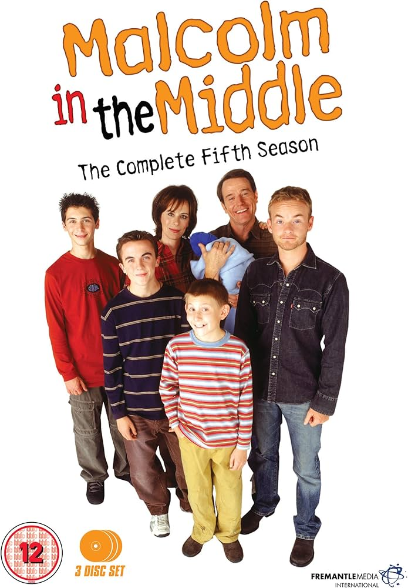
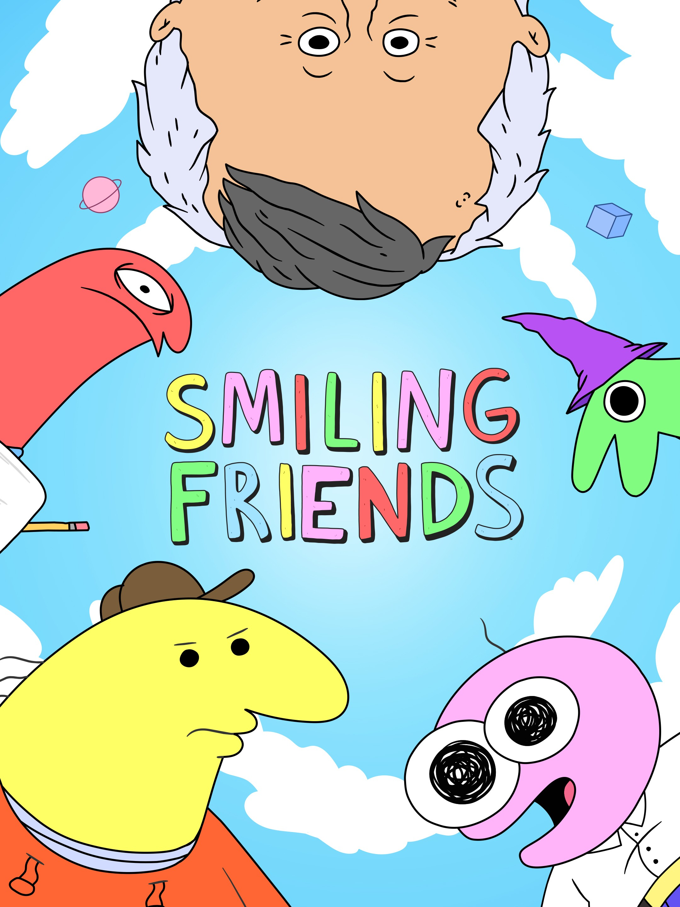

Top 5 más populares
- Seinfeld (1989-1998) - ★★★★★
- Monk (2002-2009) - ★★★★★
- Malcolm in the Middle (2000-2006) - ★★★★☆
- Smilling Friends (2022) - ★★★★★
- Shrinking (2023) - ★★★★★
Géneros disponibles
- Crimen
- Comedia
- Animación
- Ciencia Ficción
Series Favoritas
- Seinfeld
- Creadores: Jerry Seinfeld y Larry David
- Año: 1989-1998
- Género: Comedia/Sitcom
- Duración media de capítulo: 22 min
- Monk
- Creadores: Andrew Breckman
- Año: 2002-2009
- Género: Comedia/Drama/Crimen
- Duración media de capítulo: 44 min
- Malcolm in the Middle 
- Creadores: Linwood Boomer
- Año: 2000-2006
- Género: Comedia/Sitcom
- Duración media de capítulo: 20 min
- Smiling Friends 
- Creadores: Michael Cusack, Zach Hadel
- Año: 2022
- Género: Comedia/Animación
- Duración media de capítulo: 11 min
- Shrinking
- Creadores: Jason Segel, Bill Lawrence, Brett Goldstein
- Año: 2023
- Género: Comedia Dramática
- Duración media de capítulo: 35 min

Seinfeld es una comedia de situación que sigue la vida cotidiana de cuatro amigos en Nueva York: el comediante Jerry Seinfeld, su amigo inseguro y mentiroso George Costanza, su exnovia mandona y neurótica Elaine Benes, y su excéntrico vecino, el caótico Cosmo Kramer.
Tuvo alrededor de 9 temporadas con 180 capítulos.
Trailer
Tema Principal

Monk gira en torno a Adrian Monk, un brillante exdetective del Departamento de Policía de San Francisco que, tras el asesinato de su esposa, desarrolla un trastorno obsesivo-compulsivo severo y múltiples fobias que le impiden continuar con su trabajo. A pesar de su condición, trabaja como consultor privado para la policía en los casos más difíciles, utilizando sus agudas habilidades de observación para resolver crímenes.
Tuvo alrededor de 8 temporadas con 125 capítulos.
Trailer:
Soundtrack:
A Malcolm, un niño de nueve años a quien le gusta andar en patineta y pasar el rato con su mejor amigo Stevie, le cambia la vida cuando lo obligan a entrar en la clase de “talentosos” y se encuentra rodeado de un grupo de marginados talentosos.
Trailer:
Soundtrack:
La serie sigue el día a día de las vidas y peripecias de una pequeña caridad dedicada a mejorar las vidas de sus clientes. Un par de empleados, el cínico Charlie y el alegre y optimista Pim, intentan ayudar a la gente que llama a la línea telefónica de la caridad, sin embargo esta tarea demuestra ser más complicada de lo anticipado debido a la frecuentemente intricada naturaleza de los problemas de sus clientes.
Trailer:
Soundtrack:

Un terapeuta, Jimmy Laird, que se enfrenta a una pérdida familiar dolorosa, comienza a romper las barreras éticas en su trabajo al decirles a sus pacientes lo que realmente piensa, lo que genera cambios masivos en su vida y en la de ellos.